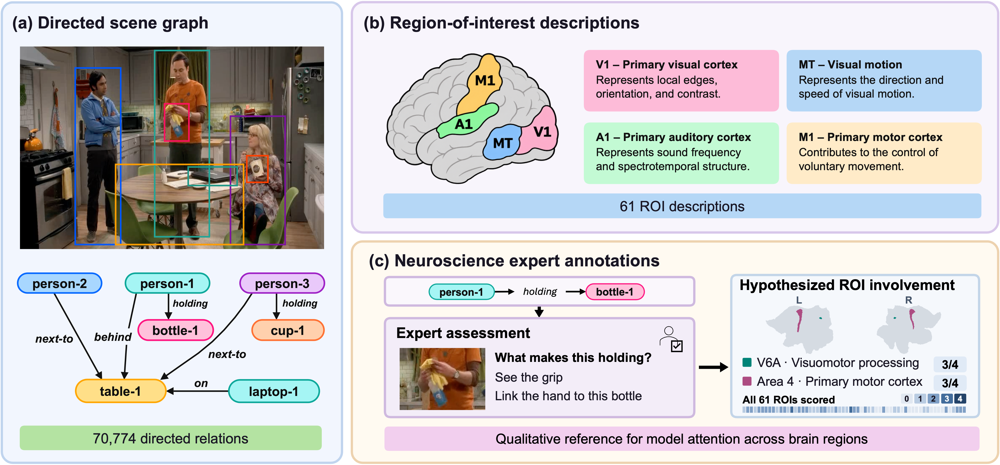

BrainSG-Bench
BrainSG-Bench pairs synchronized fMRI and EEG responses to four-second CineBrain clips with human-audited scene graphs. Each graph identifies the objects in the scene and records who or what fills each role in a directed relationship. Neuroscience experts also annotate possible cognitive processes and brain regions involved in each relationship.


Evaluation tasks
- Graph retrieval. Rank the correct graph among candidates that can contain the same objects with different relations.
- Relation decoding with known objects. Predict directed relations between supplied object instances.
- Complete scene-graph generation. Predict both object instances and their directed relations from brain responses.
Data Analysis
BrainSG-Bench contains both common and rare object classes and relation predicates. Both charts use a logarithmic count axis to show how often each class appears.